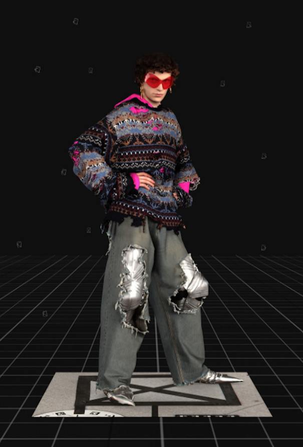
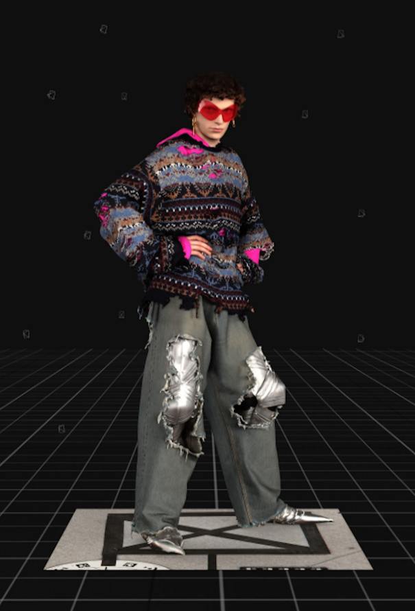

Matière / composition
La composition du tissu est majoritairement en laine, identifiée par un test au briquet révélant une combustion rapide, une odeur caractéristique de matière protéinique (cheveux brûlés) et une flamme persistante sur le textile. Ces éléments sont typiques des fibres animales.
Fil
Fil simple en fibres discontinues (laine).
Construction textile
Il s’agit d’un textile en maille cueillie, simple jersey.
Liage
Le liage est un jersey simple :
- une seule nappe de fils
- face endroit présentant des mailles en forme de “V”
- face envers présentant des boucles horizontales.
Ennoblissement couleur
La couleur bleue est obtenue par teinture en pièce, après tricotage.
Ennoblissement d’apprêt
Le tissu ne présente pas d’apprêt lourd. Il peut avoir subi un apprêt léger d’assouplissement afin d’améliorer le toucher et le confort au porté.
Aucun grattage n’est observé.
Poids
Le poids est léger à moyen, typique des jerseys simples, généralement compris entre 140 et 200 g/m² selon la finesse du fil et la densité de maille.
Produit fini
Balenciaga F/W 2021 Distressed Knit Sweater

 
